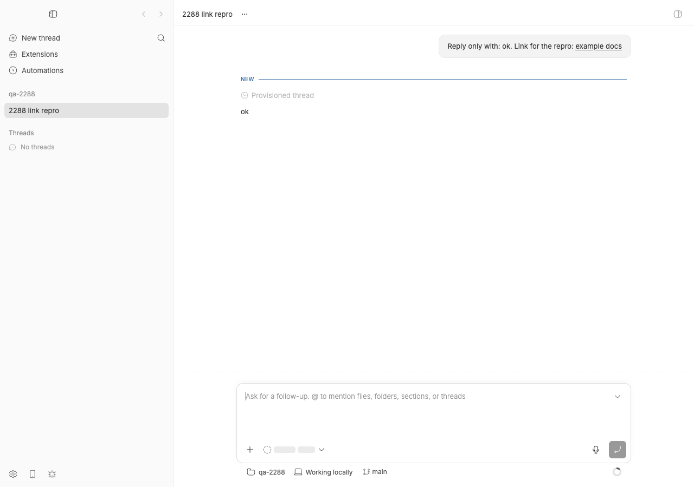
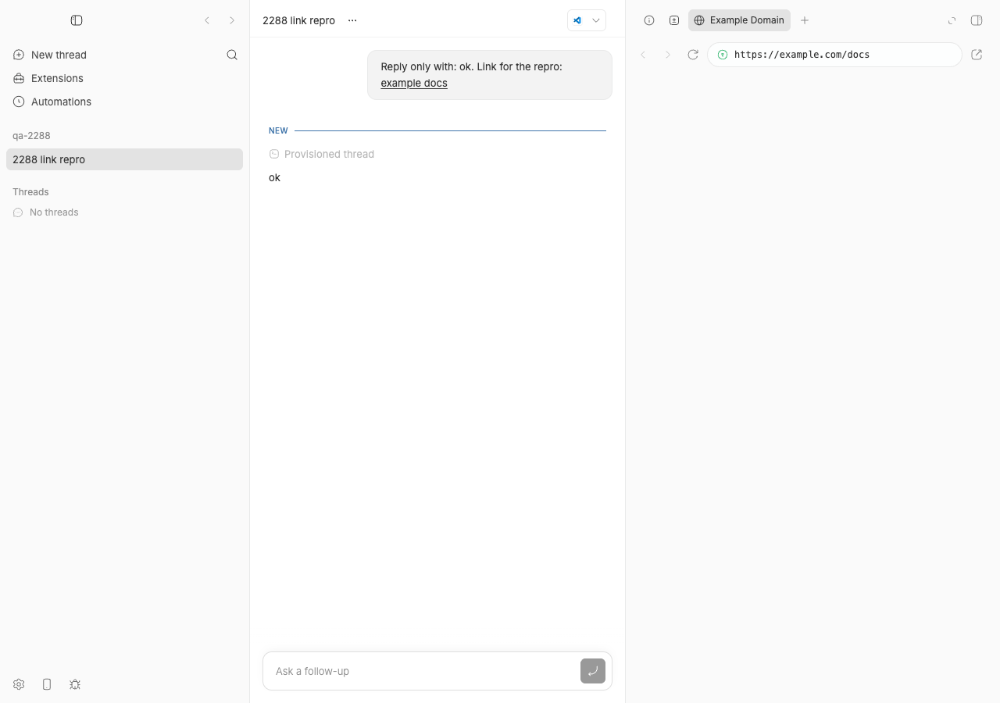
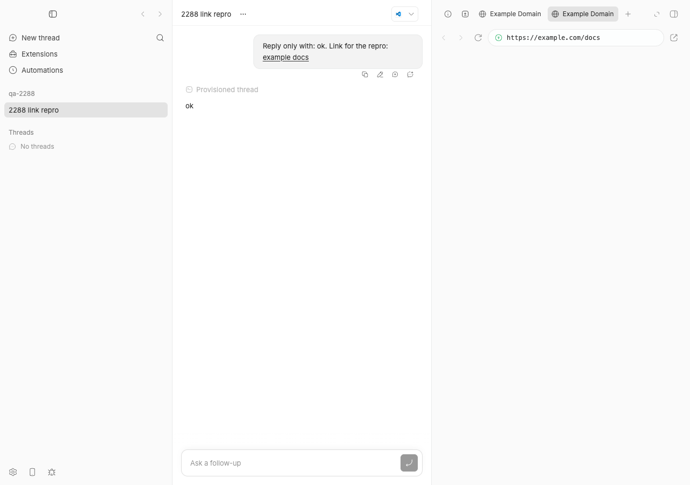

#2288 · Cmd+click on a thread link should open the macOS default browser instead of the in-app browser
Verdict: REPRODUCED · Root-cause confidence: high
1. TL;DR
In the bb desktop app, links inside thread messages are rendered by MarkdownAnchor in apps/app/src/components/ui/markdown-preview.tsx. Its click handler hands every ordinary http(s) link to linkRouting.onOpenLink (which the thread view wires to the in-app browser panel) and calls event.preventDefault() without ever looking at metaKey/ctrlKey/shiftKey/altKey. So Cmd+click, Cmd+Shift+click and Ctrl+click all behave exactly like a plain click: a new in-app browser tab opens and the OS default browser is never involved. Every other link surface in the app (useUrlAnchorClickHandler, RouteAnchor, PluginUrlLink, ExperimentalFileLink) already bails out on modified clicks, so the thread timeline is the odd one out. I reproduced it twice: with a jsdom unit test that fails on the base commit, and live in the Electron dev shell driven over CDP, where a Cmd+click on a user-message link spawned a new in-app WebContentsView for https://example.com/docs. A six-line guard in handleAnchorClick fixes it (verified live and in the unit test).
2. Claims vs findings
| Claim from the issue | Status | Evidence |
|---|---|---|
| Cmd+click on an http(s) link in a thread message opens bb's in-app browser, identical to a plain click (desktop, "Open links in the in-app browser" ON, default). | Verified | Live Electron repro: after a Cmd+click the CDP target list gains a new page target https://example.com/docs (the in-app browser view) and the "Browser navigation" bar appears (§4, 2288/repro/cdp-cmdclick-base.txt). Unit test: onOpenLink is called once and default is prevented for {metaKey:true} (§4). |
| Cmd+Shift+click does the same. | Verified | Live: second Cmd+Shift+click added a second in-app tab (cdp-cmdshiftclick-base.txt); unit test fails for {metaKey:true, shiftKey:true}. |
handleAnchorClick routes every non-route web link through linkRouting.onOpenLink and calls preventDefault() without inspecting modifier keys. | Verified | markdown-preview.tsx#L661-L684; no modifier checks anywhere in that function. |
useUrlAnchorClickHandler in url-open-routing.tsx deliberately ignores alt/ctrl/meta/shift clicks, so the two paths disagree. | Verified | url-open-routing.tsx#L88-L107; the 5th unit test (passes on base) shows Cmd+click on that path leaves the anchor alone. |
The external-open plumbing already exists (openUrlInExternalBrowser → desktopInfo.openExternalUrl). | Verified | url-open-routing.tsx#L31-L40 → preload ipcRenderer.send(BB_DESKTOP_OPEN_EXTERNAL_URL_CHANNEL) → shell.openExternal in main.ts#L1720-L1739. Note the simpler route is not even needed: if the handler just returns, the anchor has target="_blank", so Chromium asks for a new window and the main window's setWindowOpenHandler already calls openExternalUrl + denies. |
| Turning the setting OFF is an all-or-nothing workaround. | Verified (by code) | resolveUrlOpenTarget has only the preference and availability as inputs; no per-click input. |
| Affects bb 0.39.0 desktop on macOS 26.5.1. | Verified | Base commit 494f66526 is version 0.39.0 (apps/desktop/package.json); reproduced on macOS 26.5.2 with Electron 41.7.0. No fix on origin/main after base (6 newer commits, none touch these files). |
3. Environment
- bb commit
494f66526913557ab076e048218236f0a6610927(main, 2026-08-24), version 0.39.0.origin/mainchecked: no later commit touchesmarkdown-preview.tsx,url-open-routing.tsx,in-app-browser-link-preference.tsorThreadDetailView.tsx. - macOS 26.5.2 (25F84), Apple Silicon; Node v22.23.1; pnpm 9.15.0; Electron 41.7.0 (
apps/desktop/node_modules/electron); codex-cli 0.149.1 (provider used for the one tiny turn). - Own dev instance from this worktree: App
http://localhost:16135(Vite), Serverhttp://localhost:24135, Host daemon:32135, data dir~/.bb-dev/bb-machines-HOST.getbb.app-checkouts-bb-.claude-worktrees-wf_846839f8-f8a-56-7c4ca28fc0bf. Electron dev shell started withBB_DESKTOP_ELECTRON_ARGS="--remote-debugging-port=45288" scripts/bb-dev-app current --desktop. - Preference "Open links in the in-app browser" left at its default (ON).
4. Minimal reproduction
4a. Unit-level (fails on base, no app needed)
- Save the test below as
apps/app/src/components/ui/markdown-preview.modified-click.test.tsx(copy:2288/repro/markdown-preview.modified-click.test.tsx). - Run it from
apps/app:cd apps/app && pnpm exec vitest run src/components/ui/markdown-preview.modified-click.test.tsx
- Expected: all 5 tests pass (modified clicks leave the anchor alone). Actual on 494f66526 (
full log):❯ src/components/ui/markdown-preview.modified-click.test.tsx (5 tests | 3 failed) × Cmd+click leaves the anchor to platform-default handling × Cmd+Shift+click leaves the anchor to platform-default handling × Ctrl+click leaves the anchor to platform-default handling AssertionError: expected "vi.fn()" to not be called at all, but actually been called 1 times 1st vi.fn() call: Array [ Object { "href": "https://example.com/docs" } ] ❯ src/components/ui/markdown-preview.modified-click.test.tsx:54:28 54| expect(onOpenLink).not.toHaveBeenCalled(); Test Files 1 failed (1) Tests 3 failed | 2 passed (5)The two passing tests are the controls: a plain click does callonOpenLinkand prevents default (so the bug is "modified click is indistinguishable from plain click"), anduseUrlAnchorClickHandleron the same event ignores the Cmd+click.
// @vitest-environment jsdom
//
// Repro for get-bb/bb#2288: Cmd/Ctrl/Shift+click on an http(s) link inside a
// thread message is routed through `linkRouting.onOpenLink` (which the thread
// view wires to the in-app browser) exactly like a plain click, so the
// modifier never reaches the platform default (Electron window-open handler
// -> shell.openExternal).
import { cleanup, fireEvent, render, screen } from "@testing-library/react";
import { afterEach, describe, expect, it, vi } from "vitest";
import { MarkdownPreview } from "./markdown-preview";
import { useUrlAnchorClickHandler } from "@/lib/url-open-routing";
afterEach(() => {
cleanup();
window.localStorage.clear();
vi.unstubAllGlobals();
});
function renderThreadLink(onOpenLink: (link: { href: string }) => boolean) {
render(
<MarkdownPreview
content="See [docs](https://example.com/docs)."
linkRouting={{ onOpenLink }}
/>,
);
return screen.getByRole("link", { name: "docs" });
}
describe("#2288 modifier-clicks on thread markdown links", () => {
it("plain click routes through onOpenLink and prevents default (control)", () => {
const onOpenLink = vi.fn(() => true);
const link = renderThreadLink(onOpenLink);
const notPrevented = fireEvent.click(link);
expect(onOpenLink).toHaveBeenCalledWith({
href: "https://example.com/docs",
});
expect(notPrevented).toBe(false);
});
it.each([
["Cmd+click", { metaKey: true }],
["Cmd+Shift+click", { metaKey: true, shiftKey: true }],
["Ctrl+click", { ctrlKey: true }],
])("%s leaves the anchor to platform-default handling", (_label, init) => {
const onOpenLink = vi.fn(() => true);
const link = renderThreadLink(onOpenLink);
const notPrevented = fireEvent.click(link, init);
// BUG on 494f66526: onOpenLink IS called and default IS prevented, so the
// in-app browser opens exactly like a plain click.
expect(onOpenLink).not.toHaveBeenCalled();
expect(notPrevented).toBe(true);
});
it("useUrlAnchorClickHandler (the other link path) already ignores modified clicks", () => {
const opened: string[] = [];
vi.stubGlobal("open", (url: string) => {
opened.push(url);
return null;
});
function PullRequestLink() {
const onClick = useUrlAnchorClickHandler("https://example.com/pr/1");
return (
<a href="https://example.com/pr/1" onClick={onClick}>
PR
</a>
);
}
render(<PullRequestLink />);
const link = screen.getByRole("link", { name: "PR" });
expect(fireEvent.click(link, { metaKey: true })).toBe(true);
expect(opened).toEqual([]);
expect(fireEvent.click(link)).toBe(false);
expect(opened).toEqual(["https://example.com/pr/1"]);
});
});
4b. Live, in the Electron desktop shell (what the user sees)
- From the worktree, build and start a dev instance with the desktop shell and a CDP port:
pnpm install --frozen-lockfile --prefer-offline && pnpm exec turbo run build BB_DESKTOP_ELECTRON_ARGS="--remote-debugging-port=45288" scripts/bb-dev-app current --desktop # prints App http://localhost:16135, Server http://localhost:24135, Host daemon :32135
- Create a scratch repo and a project, then spawn one thread whose user message contains a markdown link (this runs one tiny codex turn):
mkdir -p /tmp/bb-2288-qa && cd /tmp/bb-2288-qa && git init -q && echo "# qa" > README.md && git add . && git commit -qm init curl -s -X POST http://localhost:24135/api/v1/projects -H 'content-type: application/json' \ -d '{"name":"qa-2288","source":{"type":"local_path","path":"/tmp/bb-2288-qa","hostId":"host_i7mz5tjqck"}}' # -> {"id":"proj_jz5k8pyp7i", ...} eval "$(scripts/bb-dev-app env)" pnpm bb:dev thread spawn --project proj_jz5k8pyp7i --provider codex --permission-mode accept-edits \ --title "2288 link repro" --prompt "Reply only with: ok. Link for the repro: [example docs](https://example.com/docs)" --json # -> {"id":"thr_q6dayhuceh", ...} - Hold Cmd and click the example docs link in the user message. (I dispatched the click through CDP so the modifier is unambiguous:
cdp-modclick.mjsmoves the mouse to the link's centre and sendsInput.dispatchMouseEventwithmodifiers=4(Meta).)node /tmp/bb-reports/issues/2288/repro/cdp-modclick.mjs \ "http://localhost:16135/projects/proj_jz5k8pyp7i/threads/thr_q6dayhuceh" meta /tmp/bb-reports/issues/assets/2288-cmdclick
Expected: nothing changes inside bb; the OS default browser openshttps://example.com/docs.
Actual (cdp-cmdclick-base.txt): a new in-app browser tab opens. The CDP target list (every ElectronWebContentsViewshows up there) goes from empty to one page target with the clicked URL, and the in-app browser nav bar is in the DOM:link: {"x":1061.5,"y":77,"w":85.5,"h":16,"text":"example docs","target":"_blank"} in-app browser targets before click: [] dispatching click at (1104, 85) modifiers=4 (meta) in-app browser targets after click: [{"type":"page","url":"https://example.com/docs"}] browser panel DOM probe: <div data-testid="browser-tab-nav-bar" data-state="expanded" role="region" aria-label="Browser navigation" ... - Cmd+Shift+click (
modifiers=12) adds a second in-app tab (cdp-cmdshiftclick-base.txt):in-app browser targets before click: [{"type":"page","url":"https://example.com/docs"}] dispatching click at (530, 106) modifiers=12 (meta,shift) in-app browser targets after click: [{"type":"page","url":"https://example.com/docs"},{"type":"page","url":"https://example.com/docs"}]


https://example.com/docs in the address bar. This is the bug; a plain click produces exactly the same result. (The page body is blank in the capture because CDP screenshots of the host page do not composite the separate browser WebContentsView.)
Repro files: 2288/repro/ (test file, CDP driver, raw outputs, candidate fix diff, logs).
5. Root cause
Thread messages render links through MarkdownAnchor. Its click handler, unchanged in this respect since the in-app-browser preference was introduced in 53d69d4b4 (PR #100, 2026-05-29), is:
// apps/app/src/components/ui/markdown-preview.tsx (494f66526, L661-L684)
const handleAnchorClick = (event: MarkdownAnchorEvent) => {
if (localFileLink && onOpenLocalFileLink) { ... return; }
// Internal BB destinations belong to RouteAnchor ...
if (isAppRouteHref) {
return;
}
// Let timeline/terminal/navigation hosts claim ordinary web links.
if (
linkRouting?.onOpenLink &&
rewrittenHref &&
linkRouting.onOpenLink({ href: rewrittenHref })
) {
event.preventDefault();
return;
}
};
permalink. onOpenLink receives only { href } (MarkdownPreviewLinkHandler), so nothing downstream can see the modifier either. In the thread view the handler chain is:
ConversationMessageContentbuildslinkRouting = { onOpenLink }for user messages (L321-L324) and assistant messages (L587-L613).ThreadDetailView.handleOpenTimelineLink→handleOpenUrlByPreference→openUrlByPreference(ThreadDetailView.tsx#L1453-L1463, #L2180-L2183).resolveUrlOpenTargetreturns"in-app-browser"whenever the desktop browser is available and the preference is ON (in-app-browser-link-preference.ts#L46-L56), soopenBrowserTabAndRevealruns and the handler returnstrue→preventDefault().
Because default is prevented, the anchor's own target="_blank" navigation never happens. Had it happened, Chromium would have asked Electron for a new window and the main window's setWindowOpenHandler (desktop-window-factory.ts#L267-L270) would have called openExternalUrl → shell.openExternal and denied the popup, i.e. exactly the macOS-conventional behaviour the issue asks for. Every other link surface already leans on that: useUrlAnchorClickHandler (L97-L99), RouteAnchor.shouldHandleRouteAnchorClick (L66-L82), PluginUrlLink.shouldHandleUrlClick (L7-L23) and ExperimentalFileLink all return early on alt/ctrl/meta/shift. MarkdownAnchor is the only one that does not, and it is the one the thread timeline uses.
Underlying issue: the "is this a plain primary click" predicate is copy-pasted in four places and was simply forgotten in the fifth. The same omission also affects any other surface that passes linkRouting.onOpenLink to MarkdownPreview: plugin markdown (plugin-sdk-app-impl.tsx), the terminal panel, embedded chat, compose panel, and the file preview. It also means button !== 0 is not checked (harmless in practice because Chromium sends middle clicks as auxclick, not click).
6. Proposed fix (first principles)
Treat a modified (or non-primary, or already-handled) click as "not ours" in MarkdownAnchor.handleAnchorClick, before consulting linkRouting.onOpenLink. Letting the event fall through is enough: on desktop the anchor's target="_blank" reaches the main window's setWindowOpenHandler, which already calls shell.openExternal; in the web build the browser opens its usual new tab. No IPC or protocol change, nothing crosses the server/daemon boundary, no HOST_DAEMON_PROTOCOL_VERSION bump. Candidate diff (fix.diff):
--- a/apps/app/src/components/ui/markdown-preview.tsx
+++ b/apps/app/src/components/ui/markdown-preview.tsx
@@ -672,6 +672,22 @@ function MarkdownAnchor({
return;
}
+ // Modifier clicks (Cmd/Ctrl/Shift/Alt) are the platform's "open this
+ // somewhere else" gesture. Leave them to the anchor default so the
+ // desktop window-open handler hands the URL to the OS browser (and a web
+ // browser opens its own tab), matching useUrlAnchorClickHandler,
+ // RouteAnchor, and PluginUrlLink.
+ if (
+ event.defaultPrevented ||
+ event.button !== 0 ||
+ event.altKey ||
+ event.ctrlKey ||
+ event.metaKey ||
+ event.shiftKey
+ ) {
+ return;
+ }
+
// Let timeline/terminal/navigation hosts claim ordinary web links.
if (
linkRouting?.onOpenLink &&
Verification with the patch applied (then reverted so the worktree only carries the test):
- Unit test:
5 passed (5)(vitest-with-fix.txt);pnpm exec turbo run typecheck --filter=@bb/appclean (log). - Live (Vite HMR into the running Electron shell): Cmd+click no longer creates an in-app target (2 before → 2 after,
cdp-cmdclick-with-fix.txt), while a plain click still does (2 → 3,cdp-plainclick-with-fix.txt), so the preference path is intact.

Better shape for the real PR: extract one isPlainPrimaryClick(event) helper (e.g. in apps/app/src/lib/url-open-routing.tsx) and use it from useUrlAnchorClickHandler, RouteAnchor, PluginUrlLink, ExperimentalFileLink and MarkdownAnchor, so the predicate cannot drift again. Things to watch: (1) keep the guard after the local-file branch, since local file links have no meaningful platform default; (2) Shift+click on macOS conventionally means "new window", and leaving it to Chromium means it, too, goes to shell.openExternal on desktop, which matches the issue's request; (3) do not route modified clicks through openUrlInExternalBrowser yourself with preventDefault(): that would be redundant on desktop and would break the web build's native Cmd+click-in-background-tab behaviour.
Caveat on evidence: I did not directly observe the external browser receiving the URL after the fixed Cmd+click. Safari was running afterwards, but reading its tab URL needs an Automation permission prompt that a non-interactive session cannot answer, so I stopped the probe. The path from an unprevented target="_blank" click to shell.openExternal is the existing, tested window-open handler, and the absence of a new in-app target is the observable half of the fix.
7. PR review
No open PR is linked to this issue (gh pr list --search 2288 and searches for "cmd click", "metaKey", "external browser link" return nothing).
8. Related issues
- #1032 "Setting for skipping in-app browser" (closed) — added the all-or-nothing preference that is this issue's workaround.
- #1931 "In-app browser: Cmd+F does not open a find-in-page bar" (closed) — unrelated mechanism, same in-app browser surface.
- Origin commit of the behaviour:
53d69d4b4"feat: setting to open chat http(s) links in the in-app browser (#100)". Later edits (df9399956,9768d5598"Add plugin navigation primitives (#2005)") reshaped the handler but never added a modifier guard, even though #2005 added one touseUrlAnchorClickHandler.
9. Appendix
Commands run
gh issue view 2288 -R get-bb/bb --comments git checkout 494f66526 pnpm install --frozen-lockfile --prefer-offline pnpm exec turbo run build git fetch origin main; git log 494f66526..origin/main --oneline -- apps/app/src/components/ui/markdown-preview.tsx apps/app/src/lib/url-open-routing.tsx ... # empty git blame -L 661,684 apps/app/src/components/ui/markdown-preview.tsx cd apps/app && pnpm exec vitest run src/components/ui/markdown-preview.modified-click.test.tsx # 3 failed / 2 passed on base BB_DESKTOP_ELECTRON_ARGS="--remote-debugging-port=45288" scripts/bb-dev-app current --desktop curl -s http://127.0.0.1:45288/json/list pnpm bb:dev machine list --json # host_i7mz5tjqck curl -s -X POST http://localhost:24135/api/v1/projects ... # proj_jz5k8pyp7i pnpm bb:dev thread spawn --project proj_jz5k8pyp7i --provider codex ... # thr_q6dayhuceh node 2288/repro/cdp-modclick.mjs <thread url> meta /tmp/bb-reports/issues/assets/2288-cmdclick node 2288/repro/cdp-modclick.mjs <thread url> meta,shift /tmp/bb-reports/issues/assets/2288-cmdshiftclick # apply fix.diff, HMR cd apps/app && pnpm exec vitest run src/components/ui/markdown-preview.modified-click.test.tsx # 5 passed pnpm exec turbo run typecheck --filter=@bb/app node 2288/repro/cdp-modclick.mjs <thread url> meta /tmp/bb-reports/issues/assets/2288-cmdclick-fixed node 2288/repro/cdp-modclick.mjs <thread url> none /tmp/bb-reports/issues/assets/2288-plainclick-fixed git checkout -- apps/app/src/components/ui/markdown-preview.tsx pnpm dev:stop; cleanup of data dir, /tmp/bb-2288-qa
Raw CDP outputs
Base commit, Cmd+click (cdp-cmdclick-base.txt):
link: {"x":1061.53125,"y":77,"w":85.46875,"h":16,"text":"example docs","target":"_blank"}
in-app browser targets before click: []
screenshot: /tmp/bb-reports/issues/assets/2288-cmdclick-before.png
dispatching click at (1104, 85) modifiers=4 (meta)
in-app browser targets after click: [{"type":"page","url":"https://example.com/docs"}]
browser panel DOM probe: <div data-testid="browser-tab-nav-bar" data-state="expanded" role="region" aria-label="Browser navigation" tabindex="-1" class="relative h-11 shrink-0 overflow-hidden focus-visible:outline-none focus-
screenshot: /tmp/bb-reports/issues/assets/2288-cmdclick-after.png
With fix, Cmd+click (cdp-cmdclick-with-fix.txt):
in-app browser targets before click: [{"type":"page","url":"https://example.com/docs"},{"type":"page","url":"https://example.com/docs"}]
dispatching click at (530, 106) modifiers=4 (meta)
in-app browser targets after click: [{"type":"page","url":"https://example.com/docs"},{"type":"page","url":"https://example.com/docs"}]
Page.windowOpen events (renderer -> Electron window-open handler): []
With fix, plain click (cdp-plainclick-with-fix.txt):
in-app browser targets before click: [{"type":"page","url":"https://example.com/docs"},{"type":"page","url":"https://example.com/docs"}]
dispatching click at (530, 106) modifiers=0 (none)
in-app browser targets after click: [{"type":"page","url":"https://example.com/docs"},{"type":"page","url":"https://example.com/docs"},{"type":"page","url":"https://example.com/docs"}]
Note on Page.windowOpen: it stayed empty in every run, including the fixed Cmd+click. Electron's setWindowOpenHandler overrides WebContents creation before Chromium's DevTools window-open instrumentation fires, so that event is not usable as evidence here; the target-count delta is.
Thread timeline used for the live repro
GET /api/v1/threads/thr_q6dayhuceh/timeline (excerpt)
{"kind":"conversation","role":"user","text":"Reply only with: ok. Link for the repro: [example docs](https://example.com/docs)", ...}
{"kind":"conversation","role":"assistant","text":"ok", ...}